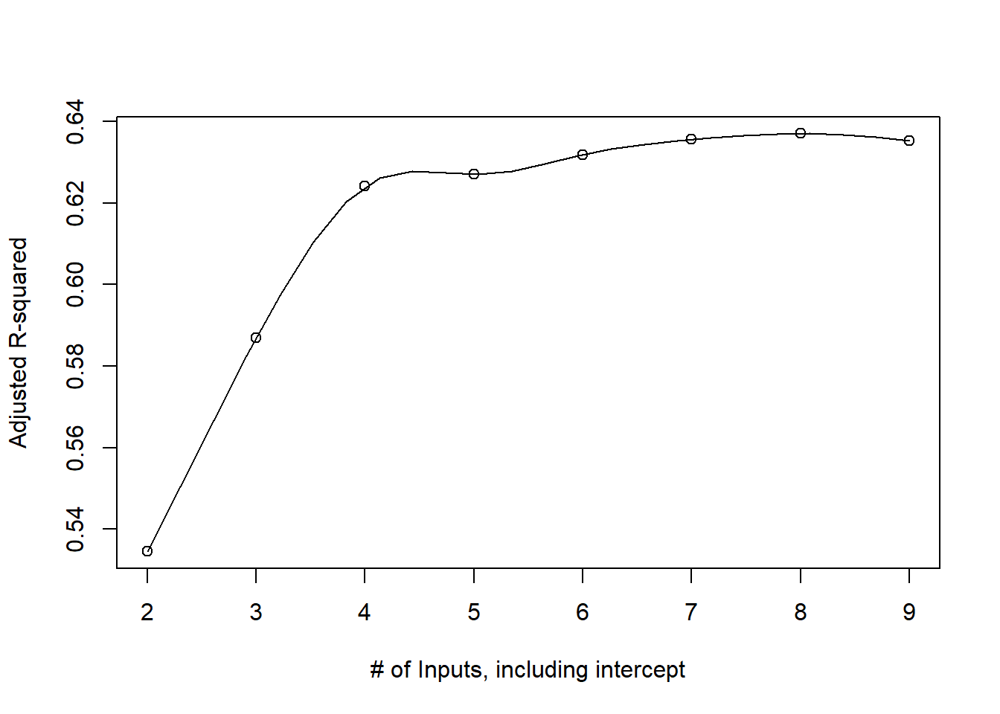
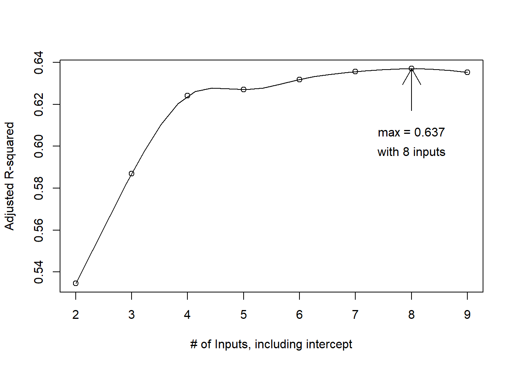
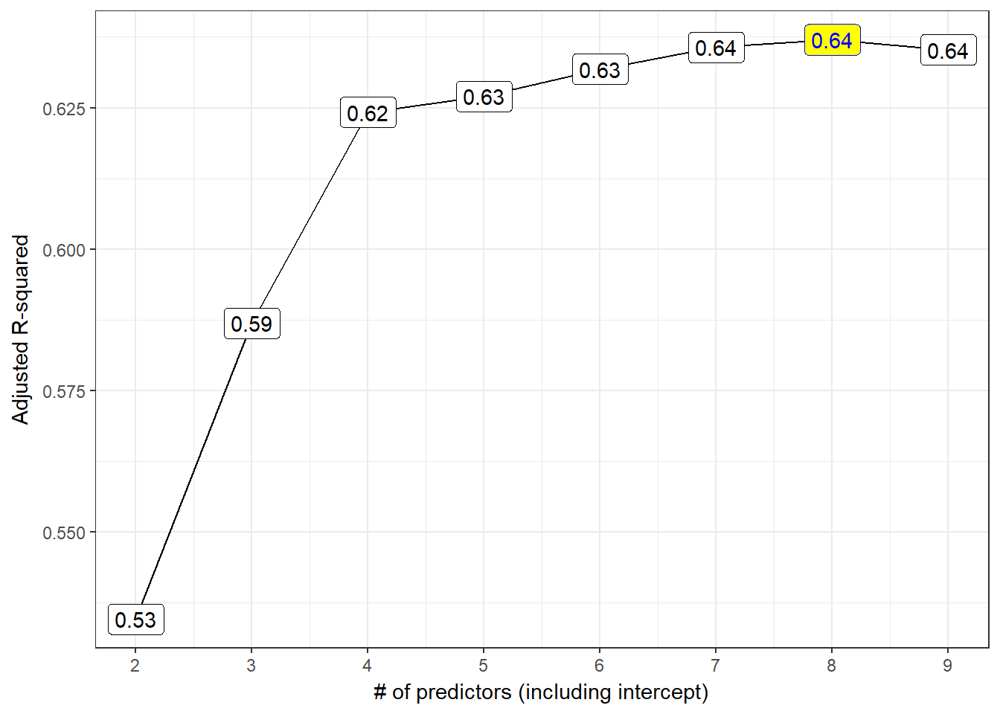

Chapter 8 “Best Subsets” Variable Selection in our Prostate Cancer Study
A second approach to model selection involved fitting all possible subset models and identifying the ones that look best according to some meaningful criterion and ideally one that includes enough variables to model the response appropriately without including lots of redundant or unnecessary terms.
8.1 Four Key Summaries We’ll Use to Evaluate Potential Models
- Adjusted R2, which we try to maximize.
- Akaike’s Information Criterion (AIC), which we try to minimize, and a Bias-Corrected version of AIC due to Hurwitz and Tsai, which we use when the sample size is small, specifically when the sample size \(n\) and the number of predictors being studied \(k\) are such that \(n/k \leq 40\). We also try to minimize this bias-corrected AIC.
- Bayesian Information Criterion (BIC), which we also try to minimize.
- Mallows’ Cp statistic, which we (essentially) try to minimize.
Choosing between AIC and BIC can be challenging.
For model selection purposes, there is no clear choice between AIC and BIC. Given a family of models, including the true model, the probability that BIC will select the correct model approaches one as the sample size n approaches infinity - thus BIC is asymptotically consistent, which AIC is not. [But, for practical purposes,] BIC often chooses models that are too simple [relative to AIC] because of its heavy penalty on complexity.
- Source: Hastie, Tibshriani, and Frideman (2001), page 208.
Several useful tools for running “all subsets” or “best subsets” regression comparisons are developed in R’s leaps package.
8.2 Using regsubsets in the leaps package
We can use the leaps package to obtain results in the prost study from looking at all possible subsets of the candidate predictors.
The leaps package isn’t particularly friendly to the tidyverse, and will require us first to identify a set of candidate predictors using with and cbind, then apply those to a regsubsets function, which identifies the set of models.
To start, we’ll ask R to find the one best subset (with 1 predictor variable [in addition to the intercept], then with 2 predictors, and then with each of 3, 4, … 8 predictor variables) according to an exhaustive search without forcing any of the variables to be in or out. We’d use the nvmax command within the regsubsets function to limit the number of regression inputs to a maximum.
preds <- with(prost,
cbind(lcavol, lweight, age, bph_f, svi_f, lcp, gleason_f, pgg45))
x1 <- regsubsets(preds, y=prost$lpsa)
rs <- summary(x1)
rsSubset selection object
8 Variables (and intercept)
Forced in Forced out
lcavol FALSE FALSE
lweight FALSE FALSE
age FALSE FALSE
bph_f FALSE FALSE
svi_f FALSE FALSE
lcp FALSE FALSE
gleason_f FALSE FALSE
pgg45 FALSE FALSE
1 subsets of each size up to 8
Selection Algorithm: exhaustive
lcavol lweight age bph_f svi_f lcp gleason_f pgg45
1 ( 1 ) "*" " " " " " " " " " " " " " "
2 ( 1 ) "*" "*" " " " " " " " " " " " "
3 ( 1 ) "*" "*" " " " " "*" " " " " " "
4 ( 1 ) "*" "*" " " "*" "*" " " " " " "
5 ( 1 ) "*" "*" "*" "*" "*" " " " " " "
6 ( 1 ) "*" "*" "*" "*" "*" " " "*" " "
7 ( 1 ) "*" "*" "*" "*" "*" "*" "*" " "
8 ( 1 ) "*" "*" "*" "*" "*" "*" "*" "*" So…
- the best one-predictor model used
lcavol - the best two-predictor model used
lcavolandlweight - the best three-predictor model used
lcavol,lweightandsvi_f - the best four-predictor model added
bph_f, and - the best five-predictor model added
age - the best six-input model added
gleason_f, - the best seven-input model added
lcp, - and the eight-input model adds
pgg45.
8.2.1 Summaries of “Winning” Models
We can easily pull out R2, adjusted R2, Cp, and BIC results for the “winning” models of each size.
winners <- tbl_df(rs$which)
winners$k <- 2:9
winners$r2 <- rs$rsq
winners$adjr2 <- rs$adjr2
winners$cp <- rs$cp
winners$bic <- rs$bicAnd here is a table of those results…
winners# A tibble: 8 x 14
`(Intercept)` lcavol lweight age bph_f svi_f lcp gleason_f pgg45
<lgl> <lgl> <lgl> <lgl> <lgl> <lgl> <lgl> <lgl> <lgl>
1 T T F F F F F F F
2 T T T F F F F F F
3 T T T F F T F F F
4 T T T F T T F F F
5 T T T T T T F F F
6 T T T T T T F T F
7 T T T T T T T T F
8 T T T T T T T T T
# ... with 5 more variables: k <int>, r2 <dbl>, adjr2 <dbl>, cp <dbl>, bic
# <dbl>- All of these “best subsets” are hierarchical, in that each model is a subset of the one below it. This isn’t inevitably true.
- By adjusted R2, which we want to maximize, the best model appears to be the model with \(k\) = 8.
- By Cp, which we want to minimize (within reason), the best choice appears to be the \(k\) = 4, 6 or 7 model.
- By BIC, the best model has \(k\) = 4.
8.3 Plotting the Best Subsets Results
8.3.1 The Adjusted R2 Plot
plot(rs$adjr2 ~ I(2:9), ylab="Adjusted R-squared",
xlab="# of Inputs, including intercept")
lines(spline(rs$adjr2 ~ I(2:9)))
Models 4-9 all look like reasonable choices here.
8.3.2 A Fancier Version (identifying the largest adjusted R2)
m2 <- max(rs$adjr2)
m1 <- which.max(rs$adjr2) + 1
plot(rs$adjr2 ~ I(2:9), ylab="Adjusted R-squared",
xlab="# of Inputs, including intercept")
lines(spline(rs$adjr2 ~ I(2:9)))
arrows(m1, m2-0.02, m1, m2)
text(m1, m2-0.03, paste("max =", format(m2, digits=3)))
text(m1, m2-0.045, paste("with", format(m1, digits=1),
"inputs"), pos=3)
8.4 Mallows’ \(C_p\)
The \(C_p\) statistic focuses directly on the tradeoff between bias (due to excluding important predictors from the model) and extra variance (due to including too many unimportant predictors in the model.)
If N is the sample size, and we select \(p\) regression predictors from a set of \(K\) (where \(p < K\)), then the \(C_p\) statistic is
\(C_p = \frac{SSE_p}{MSE_K} - N + 2p\)
where:
- \(SSE_p\) is the sum of squares for error (residual) in the model with \(p\) predictors
- \(MSE_K\) is the residual mean square after regression in the model with all \(K\) predictors
As it turns out, this is just measuring the particular model’s lack of fit, and then adding a penalty for the number of terms in the model (specifically \(2p - N\) is the penalty since the lack of fit is measured as \((N-p) \frac{SSE_p}{MSE_K}\).
If a model has no meaningful lack of fit (i.e. no substantial bias) then the expected value of \(C_p\) is roughly \(p\).
Otherwise, the expectation is \(p\) plus a positive bias term.
In general, we want to see smaller values of \(C_p\).
Often, we do this by choosing a subset of predictors that have \(C_p\) near the value of \(p\).
8.4.1 The \(C_p\) Plot
The \(C_p\) plot is just a scatterplot of \(C_p\) on the Y-axis, and \(p\) on the X-axis.
Each of the various predictor subsets we will study is represented in a single point. A model without bias should have \(C_p\) roughly equal to \(p\), so we’ll frequently draw a line at \(C_p = p\) to make that clear. We then select our model from among all models with small \(C_p\) statistics.
plot(rs$cp ~ I(2:9),
ylab="Cp Statistic",
xlab="# of Regression Inputs, including Intercept",
pch=16, main="Cp Plot")
abline(0,1, col = "purple")
Model 4 has the smallest value of \(C_p\) (and is the leftmost of the largely comparable models 4-9) while 6 is close to and 7 is right on the \(C_p = p\) line, so those are the likeliest candidates.
8.5 “All Subsets” Regression and Information Criteria
We will have three main information criteria:
- the Bayesian Information Criterion, called BIC
- the Akaike Information Criterion (used by R’s default stepwise approaches,) called AIC
- a corrected version of AIC due to Hurwitz and Tsai, called AICc
Each of these indicates better models by getting smaller.
8.5.1 The BIC Plot
R provides the BIC directly as part of the result of running regsubsets, as we’ve seen.
plot(rs$bic ~ I(2:9), ylab="BIC", xlab="# of Fitted Inputs",
pch=16, cex=1.5, col="slateblue", main="BIC Plot")
We want to minimize BIC, which argues strongly for the model with 4 inputs, including the intercept.
8.5.2 AIC with “All Subsets”
To get the AIC, we can use the formula
\[ AIC = n log(RSS/n) + 2p \]
where n is the sample size, p = # of regression inputs to be fit in the model (including the intercept) and the RSS can be found in the regsubsets output:
rs$rss[1] 58.91478 51.74218 46.56844 45.72444 44.64364 43.69047 43.04471 42.77150So, in our case, we have n = 97 subjects, and models being fit with 2 to 9 regression inputs (including the intercept), so we have:
rs$aic <- 97*log(rs$rss / 97) + 2*(2:9)
rs$aic[1] -44.36603 -54.95846 -63.17744 -62.95157 -63.27191 -63.36534 -62.80974
[8] -61.427388.5.3 The Bias-Corrected AIC (Hurwitz & Tsai)
The bias-corrected AIC formula due to Hurwitz and Tsai is:
\(AIC_c\) = n log(RSS/n) + 2p + [2p (p+1) / (n-p-1)] = AIC + [2p (p+1) / (n-p-1)]
rs$aic.corr <- 97*log(rs$rss / 97) + 2*(2:9) +
(2 * (2:9) * ((2:9)+1) / (97 - (2:9) - 1))
round(rs$aic,2) # uncorrected [1] -44.37 -54.96 -63.18 -62.95 -63.27 -63.37 -62.81 -61.43round(rs$aic.corr,2) # bias-corrected[1] -44.24 -54.70 -62.74 -62.29 -62.34 -62.11 -61.17 -59.36plot(rs$aic.corr ~ I(2:9), ylab="AIC, corrected", xlab="# of Fitted Inputs",
pch=16, cex=1.5, col="tomato", main="AIC (corrected) Plot")
The smallest AICc values occur in models 4 and later, especially model 4 itself.
8.6 All Four Plots, Together
par(mfrow = c(2,2))
m2 <- max(rs$adjr2)
m1 <- which.max(rs$adjr2) + 1
plot(rs$adjr2 ~ I(2:9), ylab="Adjusted R-squared",
xlab="# of Inputs, including intercept",
main = "Adjusted R-squared")
lines(spline(rs$adjr2 ~ I(2:9)))
arrows(m1, m2-0.02, m1, m2)
text(m1, m2-0.03, paste("max =", format(m2, digits=3)))
text(m1, m2-0.045, paste("with", format(m1, digits=1),
"inputs"), pos=3)
plot(rs$cp ~ I(2:9),
ylab="Cp Statistic",
xlab="# of Regression Inputs, including Intercept",
pch=16, main="Cp Plot")
abline(0,1, col = "purple")
rs$aic.corr <- 97*log(rs$rss / 97) + 2*(2:9) +
(2 * (2:9) * ((2:9)+1) / (97 - (2:9) - 1))
plot(rs$aic.corr ~ I(2:9), ylab="AIC, corrected", xlab="# of Fitted Inputs",
pch=16, cex=1.5, col="tomato", main="AIC (corrected) Plot")
plot(rs$bic ~ I(2:9), ylab="BIC", xlab="# of Fitted Inputs",
pch=16, cex=1.5, col="slateblue", main="BIC Plot")par(mfrow = c(1,1))8.7 Table of Key Results
We can build a big table, like this:
winners <- data_frame(inputs = 2:9)
winners$r2 <- rs$rsq
winners$adjr2 <- rs$adjr2
winners$cp <- rs$cp
winners$bic <- rs$bic
winners$aic <- rs$aic
winners$aic.corr <- rs$aic.corr
winners %>% round(., 3)# A tibble: 8 x 7
inputs r2 adjr2 cp bic aic aic.corr
<dbl> <dbl> <dbl> <dbl> <dbl> <dbl> <dbl>
1 2.00 0.539 0.535 28.2 -66.1 -44.4 -44.2
2 3.00 0.596 0.587 15.5 -74.1 -55.0 -54.7
3 4.00 0.636 0.624 6.81 -79.7 -63.2 -62.7
4 5.00 0.643 0.627 7.08 -76.9 -63.0 -62.3
5 6.00 0.651 0.632 6.85 -74.7 -63.3 -62.3
6 7.00 0.658 0.636 6.89 -72.2 -63.4 -62.1
7 8.00 0.663 0.637 7.56 -69.0 -62.8 -61.2
8 9.00 0.666 0.635 9.00 -65.1 -61.4 -59.48.8 Models Worth Considering?
| \(k\) | Size | Predictors | Reason |
|---|---|---|---|
| 4 | 3 | lcavol lweight svi_f |
minimizes BIC |
| 7 | 6 | + age bph_f gleason_f |
\(C_p\) near p |
| 8 | 7 | + lcp |
max \(R^2_{adj}\) |
8.9 ANOVA Testing to compare these three models?
Let’s run an ANOVA-based comparison of these nested models to each other and to the model with the intercept alone.
m.int <- lm(lpsa ~ 1, data = prost)
m04 <- lm(lpsa ~ lcavol + lweight + svi_f, data = prost)
m07 <- lm(lpsa ~ lcavol + lweight + svi_f +
age + bph_f + gleason_f, data = prost)
m08 <- lm(lpsa ~ lcavol + lweight + svi_f +
age + bph_f + gleason_f + lcp, data = prost)
m.full <- lm(lpsa ~ lcavol + lweight + svi_f +
age + bph_f + gleason_f + lcp + pgg45, data = prost)Next, we’ll run…
anova(m.full, m08, m07, m04, m.int)Analysis of Variance Table
Model 1: lpsa ~ lcavol + lweight + svi_f + age + bph_f + gleason_f + lcp +
pgg45
Model 2: lpsa ~ lcavol + lweight + svi_f + age + bph_f + gleason_f + lcp
Model 3: lpsa ~ lcavol + lweight + svi_f + age + bph_f + gleason_f
Model 4: lpsa ~ lcavol + lweight + svi_f
Model 5: lpsa ~ 1
Res.Df RSS Df Sum of Sq F Pr(>F)
1 86 41.057
2 87 41.498 -1 -0.441 0.9234 0.3393
3 88 42.066 -1 -0.568 1.1891 0.2786
4 93 46.568 -5 -4.503 1.8863 0.1050
5 96 127.918 -3 -81.349 56.7991 <2e-16 ***
---
Signif. codes: 0 '***' 0.001 '**' 0.01 '*' 0.05 '.' 0.1 ' ' 1What conclusions can we draw here, on the basis of these ANOVA tests?
References
Hastie, Trevor, Robert Tibshriani, and Jerome H. Frideman. 2001. The Elements of Statistical Learning. New York: Springer.